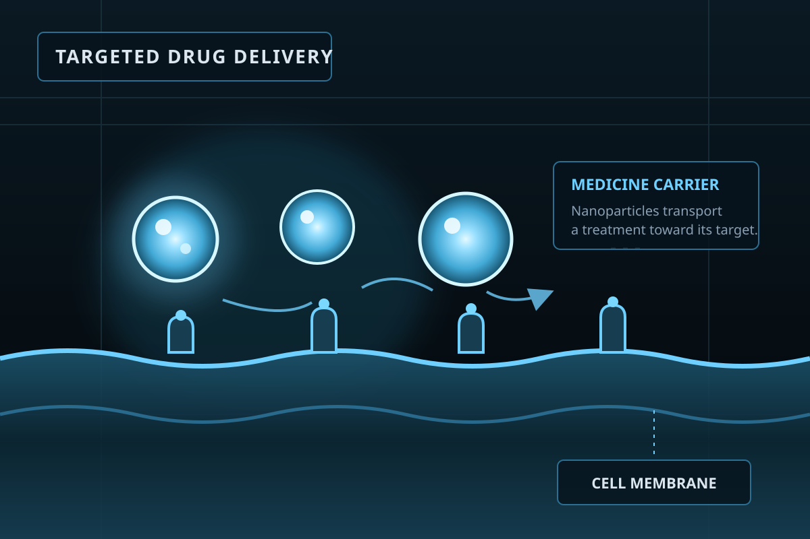
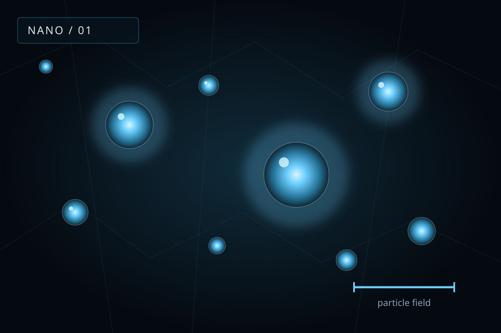
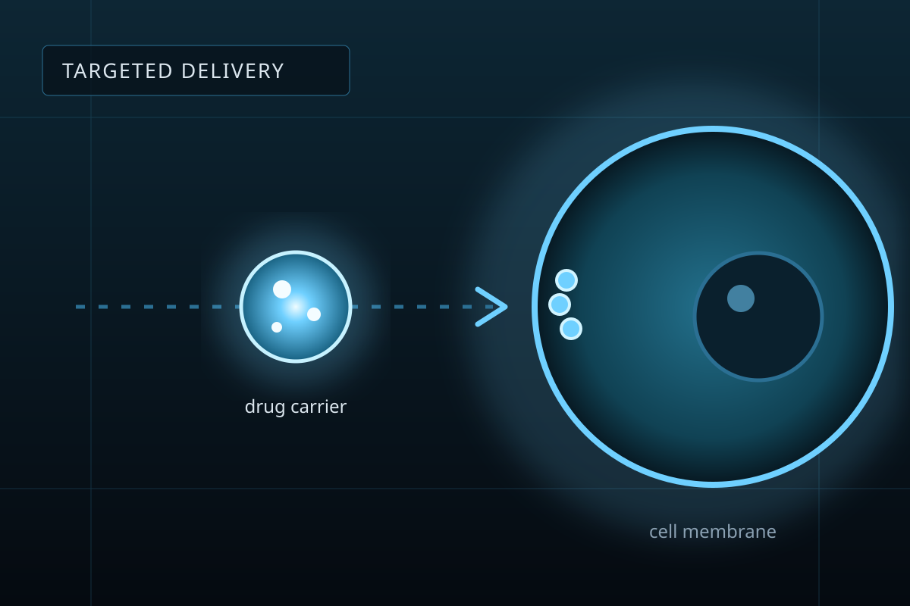
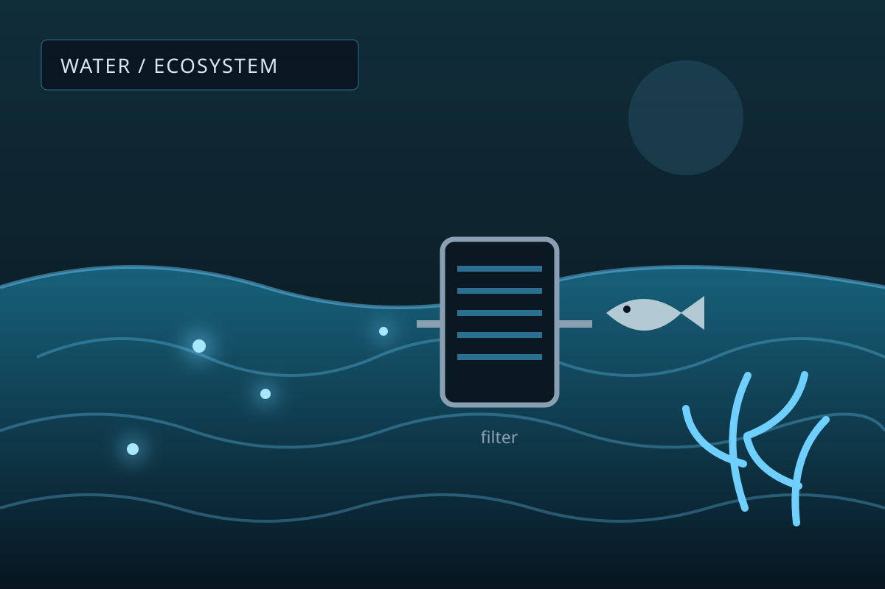
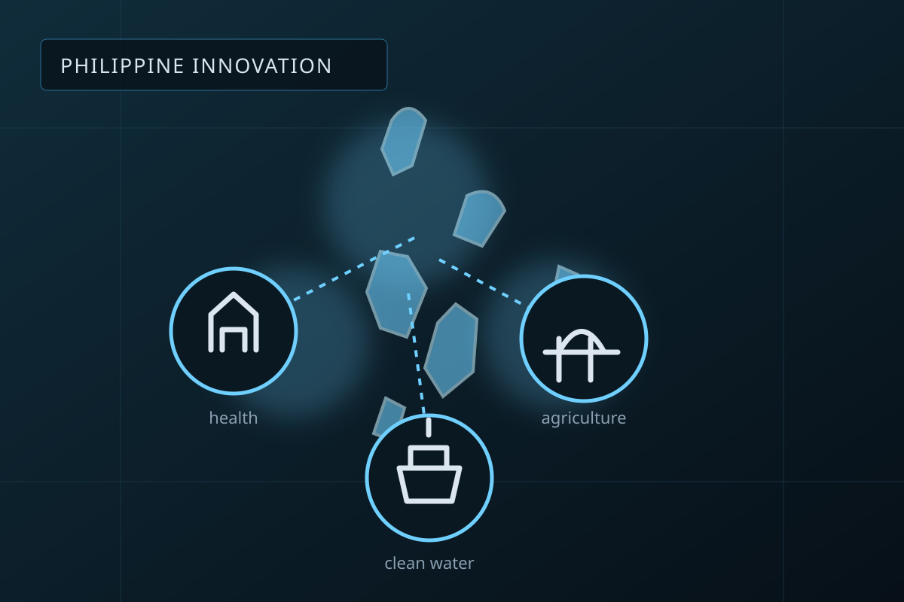
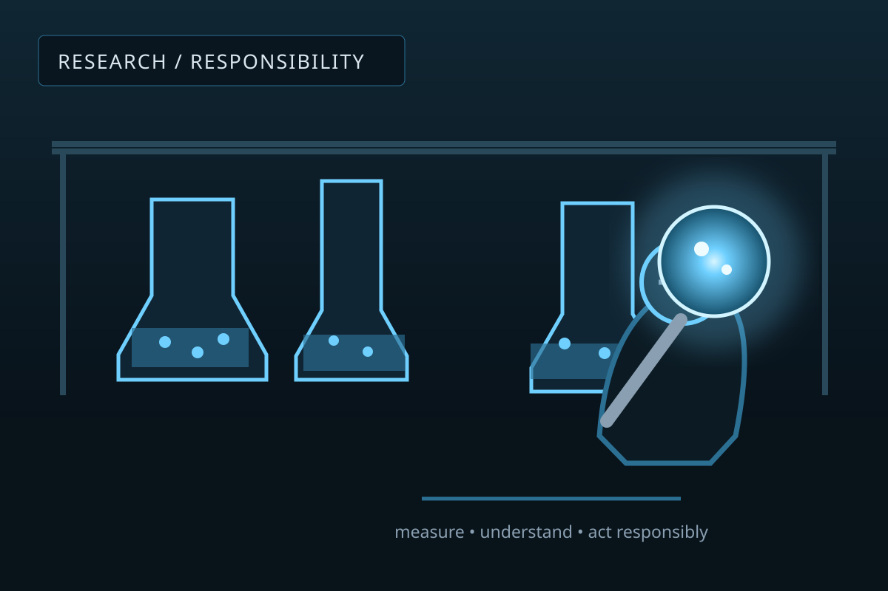

Science, Technology, and Society research paper
Ethical Issues Concerning Nanotechnology
Materials 1 to 100 nanometers wide can heal, power, and feed us. They can also harm in ways we do not fully understand yet. This site explains both sides.
Click the microbot to break it into a swarm.

What is the problem?
Nanotechnology manipulates materials at an extreme scale, roughly 1 to 100 nanometers. It is already used in medicine, electronics, agriculture, environmental protection, energy, and manufacturing.
But nanomaterials have unique properties, and their effects on human health and the environment are not always fully understood. Concerns include health risks, pollution, privacy and security, unequal access to benefits, and above all the responsible use of the technology.
Who this helps
Researchers and scientists
Consider health and environmental effects early, and keep ethical standards in the lab.
Policymakers
A reference for rules on safe production, use, and disposal of nanomaterials.
Industries
Safe exposure limits, risk management, and clear labeling of nano products.
Advocates
Evidence on ecosystem and health impacts to support safer practices.
The science at the nanoscale
At 1 to 100 nanometers, materials behave differently from their bulk form. Three properties explain both the promise and the risk.

Quantum effects
Quantum physics dominates. Conductivity, magnetism, reactivity, and color change. Gold can look red or purple.
High surface area
Smaller particles put more atoms on the surface, which raises reactivity. That helps medicine, energy storage, and water purification.
Biological interaction
Nanoparticles can cross cell membranes and even the blood-brain barrier. That enables targeted drugs but raises toxicity and bioaccumulation concerns.
Where it is used
Medicine
Targeted drug delivery, especially for cancer, plus biosensors and imaging agents (Al-Thani et al., 2024).
Electronics
Graphene and carbon nanotubes in smaller, more efficient devices and sensors (Semkin et al., 2022).
Agriculture
Nano-fertilizers cut waste, and nanosensors monitor soil and plants (Santos et al., 2025).
Manufacturing
Light, strong nanocomposites for aerospace, construction, and coatings.
Ethical concerns
Pick a concern to read how the paper frames it.
Nanoparticles can cross some biological barriers and interact with cells in unpredictable ways. That raises questions about toxicity, bioaccumulation, and long-term exposure. Risks vary with particle size, shape, and composition. These uncertainties call for strict monitoring, transparent regulation, and responsible innovation (Inbathamizh et al., 2023).
Consumer products such as cosmetics, clothing, food packaging, and pharmaceuticals already carry nanomaterials, so public trust depends on open policy and rigorous health monitoring.

Producing, using, and disposing of nanomaterials can release pollutants into soil and water. Devasena et al. (2022) note that nanoparticles can build up in the environment and harm plants and aquatic life.
That threatens farming, fisheries, and clean water for the communities that depend on them. Ethical responsibility means safe disposal by industry and enforced environmental rules by governments.

Salamanca-Buentello and Daar (2021) argue that risks and benefits are not shared evenly. Wealthy nations and corporations gain the advanced nanomedicine and industrial applications, while low-income and minority communities carry more of the environmental and health risk.
Biroudian et al. (2020) call this the "nano-divide" and say fair access needs intentional policy and global cooperation.
Scholars point to surveillance misuse, military applications, and the nano-divide between those with access and those without (Philosophy Institute, 2025).
Ethical frameworks need to address privacy, democratic oversight, and responsible innovation so that progress matches society's values.
Three ways to read the problem
Through the STS lens, nanotechnology is a shared socio-technical reality, not only a scientific breakthrough. The paper compares three perspectives.
| Risk assessment | Justice and equity | Responsible innovation | |
|---|---|---|---|
| The problem | Unpredicted health and environmental hazards from nanomaterials' unique properties (dos Santos et al., 2022). | The nano-gap: unequal access to benefits between nations, industries, and marginalized groups (Biroudian et al., 2020). | Technology scales faster than ethical review, and public risk perception is misaligned (Boholm & Larsson, 2019). |
| The solution | Risk-benefit balancing and standard toxicological safety evaluations (Resnik, 2019). | Inclusive policy and structural reform to close access gaps (Biroudian et al., 2020). | Safe-by-Design plus two-way public communication and early ethics (Bouchaut et al., 2021). |
Examples from the Philippines and abroad
In the Philippines

- DOST-ITDI made nanotextured stainless steel implants that the body accepts more easily.
- UPLB developed a nano plant growth regulator that reduces chemical fertilizer use.
- Central Luzon State University built a nanogold biosensor kit that detects African Swine Fever in 30 minutes.
- The Mabuhay Straw nanofiltration device supplies clean drinking water.
Around the world
- COVID-19 mRNA vaccines used lipid nanoparticles to carry genetic material.
- Doxil and Abraxane deliver cancer drugs straight to tumors.
- Perovskite solar cells have passed 26% efficiency.
- Graphene filters remove harmful metals and bacteria from water, and UK nanoneedle patches collect biomarkers without pain.
Test your knowledge
See what you remember about nanotechnology and its ethical issues.
What the literature tells us
Nanotechnology can help in medicine, electronics, agriculture, energy, and manufacturing. It also carries concerns about health, the environment, privacy and security, and unequal access. Because some effects are still not understood, both benefits and risks must be weighed.

The development of nanotechnology should come with ethical responsibility: sound research, safety measures, careful decisions, and appropriate policy, so society benefits while harm is reduced.
How this study was done
A descriptive and applied development design. The team reviewed journals, case studies, and institutional sources, then built this informational website. No surveys or interviews were used. The site is for students, especially IT students of PHINMA Saint Jude College Manila.
References
- Al-Thani, A. N., Jan, A. G., Abbas, M., Geetha, M., & Sadasivuni, K. K. (2024). Nanoparticles in cancer theranostic and drug delivery: A comprehensive review. Life Sciences, 352, 122899.
- Biroudian, S., Abbasi, M., & Kiani, M. (2020). Theoretical and practical principles on nanoethics: A narrative review article. Iranian Journal of Public Health, 48(10).
- Boholm, Å., & Larsson, S. (2019). What is the problem? A literature review on challenges facing the communication of nanotechnology to the public. Journal of Nanoparticle Research, 21, 86.
- Bouchaut, B., Asveld, L., Hanefeld, U., & Vlierboom, A. (2021). Value conflicts in designing for safety. International Journal of Environmental Research and Public Health, 18(4), 1963.
- da Rosa, M. M. (2022). Ethical issues in nanotechnology-I. In Environmental, ethical, and economical issues of nanotechnology. Jenny Stanford Publishing.
- Devasena, T., et al. (2022). Insights on the dynamics and toxicity of nanoparticles in environmental matrices. Bioinorganic Chemistry and Applications, 2022, 4348149.
- dos Santos, O. A. L., Pizzorno Backx, B., Abumousa, R. A., & Bououdina, M. (2022). Environmental implications associated with the development of nanotechnology: From synthesis to disposal. Nanomaterials, 12(23), 4319.
- Inbathamizh, L., et al. (2023). Nanotechnology: Ethical impacts, health issues, and safety issues. In Modern Nanotechnology. Springer.
- Philosophy Institute. (2025). Ethical and social implications of nanotechnology: A critical overview.
- Resnik, D. B. (2019). How should engineered nanomaterials be regulated for public and environmental health? AMA Journal of Ethics, 21(4), E363–E369.
- Salamanca-Buentello, F., & Daar, A. S. (2021). Nanotechnology, equity and global health. Nature Nanotechnology, 16, 358–361.
- Santos, M. S., Santos, C. S., Fraceto, L. F., & Oliveira, H. C. (2025). Agricultural nanotechnology for a safe and sustainable future. Journal of the Science of Food and Agriculture, 105(6), 3159–3169.
- Semkin, A., Balakrishnan, R., & Lazovič, S. (2022). Nanotechnology in electronics, materials properties, and devices. In Nanotechnology in Electronics. Wiley.
Image credits
- science-nanoparticles.svg — Original vector illustration created for this site.
- health-drug-delivery.svg — Original vector illustration created for this site.
- environment-water.svg — Original vector illustration created for this site.
- ph-innovation.svg — Original vector illustration created for this site.
- conclusion-lab.svg — Original vector illustration created for this site.